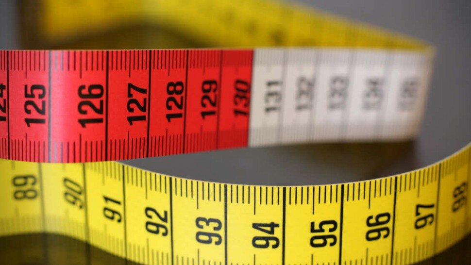

Régime hypocalorique : bénéfices et dangers


Sommaire
- Environ 50% des hommes et 70% des femmes voudraient maigrir
- Aucun régime minceur ne marche véritablement sur le long terme.
- La liste des régimes est en surpoids
- Que signifie « régime hypocalorique » ou « restriction calorique » ?
- Que se passe-t-il lorsqu'on limite l’apport en calories ?
- Les dangers d’un régime hypocalorique
- Régime hypocalorique efficace chez l’homme et chez la femme ?
- Régime hypocalorique et perte de poids
- Régime hyperprotéiné et hypocalorique
- Régime hyperprotéiné et hypocalorique : repas hypocalorique
- Régime hypocalorique 1200 calories
- Petit déjeuner
- Régime hypocalorique et sport
- Sources

Environ 50% des hommes et 70% des femmes voudraient maigrir, c’est ce que rapporte une étude [1] publiée par l’INSERM en 2012 sur les comportements « minceur ». Et chaque année, de nouveaux régimes font leur apparition et la liste ne cesse de croître.
La liste des régimes est en surpoids
Que signifie « régime hypocalorique » ou « restriction calorique » ?
Régime hypocalorique efficace chez l’homme et chez la femme ?

Les régimes hypocaloriques affectent différemment le corps des hommes et des femmes, selon une étude [9] publiée en 2018 dans la revue Diabetes, Obesity and Metabolism. Dans l’étude, plus de 2000 personnes en surpoids atteintes de pré-diabète ont suivi un régime hypocalorique pendant 8 semaines.
D’après les résultats, les hommes ont perdu beaucoup plus de poids corporel que les femmes. Ils ont eu des réductions plus importantes du score du syndrome métabolique [10] (coexistence de plusieurs troubles de santé d'origine lipidique, glucidique ou vasculaire associés à un excès de poids), un indicateur du diabète, de la masse grasse et la fréquence cardiaque. Les auteurs indiquent qu’il semble que les hommes aient davantage bénéficié de l'intervention que les femmes.
Les femmes, en revanche, ont eu quelques effets négatifs en plus de la perte de poids. Ils ont constaté une diminution du bon cholestérol (HDL), de la masse corporelle maigre et de la teneur en minéraux osseux, dont aucun n'est bon pour la santé à long terme.
Par contre, les deux sexes ont vu une diminution des biomarqueurs inflammatoires [11], ce qui a conduit à une amélioration du flux sanguin [12].
Enfin, cette étude ne signifie pas que les femmes ne devraient pas adhérer à un régime hypocalorique, mais elle donne des indications et recommandations essentielles pour les professionnels de la santé.
La perte de poids peut freiner le diabète, « mais les femmes doivent comprendre qu'une perte de poids rapide peut avoir des implications à long terme » insistent les auteurs.
Effectivement, il est important d'avoir une alimentation variée (produits de la mer, produits laitiers, etc.) et plus équilibrée après ce type de perte de poids rapide et de travailler avec les professionnels de la santé pour surveiller l'état de santé général.
Régime hypocalorique et perte de poids
Régime hyperprotéiné et hypocalorique
Régime hyperprotéiné et hypocalorique : repas hypocalorique
Régime hypocalorique et sport
Sources
- Nutrinet-santé, INSERM, https://etude-nutrinet-sante.fr/
- Régime cétogène : bienfaits et dangers, https://www.le-guide-sante.org/actualites/nutrition/regime-cetogene-bienfaits-dangers
- WW International Inc (anciennement Weight Watchers International, Inc), https://fr.wikipedia.org/wiki/Weight_Watchers
- 5 façons de faire un jeûne intermittent, https://blognutritionsante.com/2019/07/09/guide-jeune-intermittent/
- L'activité physique est un traitement : interview d'un médecin du sport, https://www.le-guide-sante.org/actualites/forme-et-bien-etre/activite-physique-interview-medecin-sport
- Obésité et surpoids chez l'enfant et l'adolescent dans le monde, https://www.le-guide-sante.org/actualites/nutrition/obesite-surpoids-enfant-adolescent-epidemie-mondiale
- Adaptive thermogenesis in human body weight regulation: more of a concept than a measurable entity? Obes Rev. 2012 Dec;13 Suppl 2:105-21. doi: 10.1111/j.1467-789X.2012.01041.x. PMID: 23107264. https://pubmed.ncbi.nlm.nih.gov/23107264/
- Update on stress fractures in female athletes: epidemiology, treatment, and prevention, https://pubmed.ncbi.nlm.nih.gov/23536179/
- Men and women respond differently to rapid weight loss: Metabolic outcomes of a multi-centre intervention study after a low-energy diet in 2500 overweight, individuals with pre-diabetes (PREVIEW). Diabetes, Obesity and Metabolism, 2018; DOI: 10.1111/dom.13466, https://dom-pubs.onlinelibrary.wiley.com/doi/full/10.1111/dom.13466
- Le syndrome métabolique (Syndrome X), https://www.fedecardio.org/Les-maladies-cardio-vasculaires/Les-pathologies-cardio-vasculaires/zoom-sur-le-syndrome-metabolique
- Vieux et nouveaux biomarqueurs inflammatoires : quelle utilité pour l’interniste généraliste ?, https://www.revmed.ch/RMS/2013/RMS-N-404/Vieux-et-nouveaux-biomarqueurs-inflammatoires-quelle-utilite-pour-l-interniste-generaliste
- Vitesse du flux sanguin, http://www.chu-rouen.fr/page/vitesse-du-flux-sanguin
- Les glucides, https://www.le-guide-sante.org/actualites/nutrition/glucides-macronutriments-nutrition
- Protéines et acides aminées, https://www.le-guide-sante.org/actualites/nutrition/proteines-acides-amines-que-faut-il-savoir
- Aliments indispensables, Acides aminés indispensables : définition, http://www.chups.jussieu.fr/polys/biochimie/DGbioch/POLY.Chp.2.html
- Thé : bienfaits et méfaits pour la santé, https://www.le-guide-sante.org/actualites/nutrition/the-bienfaits-mefaits-sante-nutrition
- Anses (Agence nationale de sécurité sanitaire de l'alimentation, de l'environnement et du travail) : https://ciqual.anses.fr
- Calorie restriction regime enhances physical performance of trained athletes. J Int Soc Sports Nutr. 2018;15:12. Published 2018 Mar 9. doi:10.1186/s12970-018-0214-2, https://www.ncbi.nlm.nih.gov/pmc/articles/PMC5845356/
- Les régimes alimentaires : que faut-il savoir ? https://www.le-guide-sante.org/actualites/nutrition/regimes-alimentaires-que-faut-il-savoir
- Métabolisme anaérobie lactique - Acide Lactique - CHUPS, http://www.chups.jussieu.fr/polys/dus/dusmedecinedusport/dupromotionsportetsante2011/coursspeciaux/6eet8ecoursMetabolismesanaerobiesNovembre2008.pdf
- Annuaire des Hôpitaux et cliniques par villes, https://www.le-guide-sante.org/le-guide/par-regions/par-departements/par-villes
- Les vitamines : carences et excès - de la vitamine A à la vitamine D ! [1/2], https://www.le-guide-sante.org/actualites/nutrition/vitamines-carences-exces-ep-1